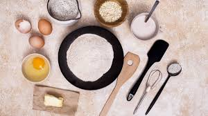
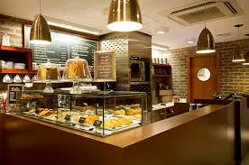

Історія "Ласунчика" почалася з маленької пекарні та великої мрії створювати найсмачніші солодощі в Україні.

Ми використовуємо тільки натуральні інгредієнти: справжнє масло, бельгійський шоколад, свіжі ягоди та горіхи.
Наші постійні клієнти — це родини, закохані, офіси, школи та всі, хто любить якісні солодощі!